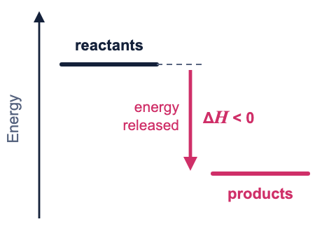
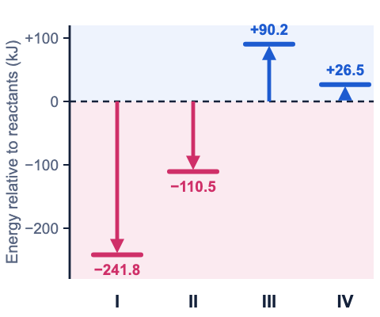

Answer: A. Reactions I and II are exothermic.
An exothermic reaction releases energy to its surroundings. The products finish with less energy than the reactants started with.
That drop is the enthalpy change, so for an exothermic reaction ΔH is negative.

The four equations show the energy change in two different ways.
With ΔH notation: a negative sign means exothermic, a positive sign means endothermic.
As a term in the equation: energy written with the products was released (exothermic). Energy written with the reactants was absorbed (endothermic).
I: H2(g) + ½O2(g) → H2O(g) ΔH = −241.8 kJ
The sign is negative, so it is exothermic.
II: C(s) + ½O2(g) → CO(g) + 110.5 kJ
The energy is on the product side, so the reaction gives it out. It is exothermic, the same as writing ΔH = −110.5 kJ.
III: ½N2(g) + ½O2(g) + 90.2 kJ → NO(g)
The energy is on the reactant side, so the reaction must take it in. It is endothermic, the same as ΔH = +90.2 kJ.
IV: ½H2(g) + ½I2(s) → HI(g) ΔH = +26.5 kJ
The sign is positive, so it is endothermic.

Only I and II release energy, so the answer is A.
Take care with equation II: the plus sign in front of 110.5 kJ does not mean ΔH is positive. It only says that energy is one of the products.
© 2026 Evelyn Learning